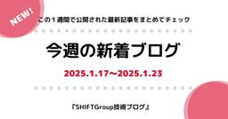

SHIFT Group 技術ブログ
https://note.shiftinc.jp
「無駄をなくしたスマートな社会の実現」を目指し、ソフトウェア製品の開発、運用、マーケティングなどあらゆる立場から携わるSHIFT Groupの公式note。エンタメ・ゲーム業界から、Web系、金融／製造／小売りなどのエンタープライズ業界まで広い知見を活かした情報を発信しています。
フィード


今週の新着ブログ★20本公開！(2025.1.24~2025.1.30)_ソフトウェアテスト_Linux_Salesforce_情シスと経営 etc
SHIFT Group 技術ブログ
こんにちは！「SHIFTグループ技術ブログ」編集部です。2020年からSHIFTグループの従業員が“公式ブロガー”として、様々な領域のノウハウ＝技術を自らの言葉で執筆し、日々発信しています。続きをみる
18時間前


【SHIFT SAP教育】週次で教材配信をしている話－サクッと学べる3分動画－
SHIFT Group 技術ブログ
こんにちは。株式会社SHIFT SAPサービスグループ 教育チームの加山です。SAPサービスグループの社内教育を担当しています。続きをみる
2日前

積読(つんどく)リストをChatGPTにさくっと管理していただいたらめっちゃUXが良さげな件
SHIFT Group 技術ブログ
ごきげんよう。CATチーム、テスト管理ツール「CAT」のエヴァンジェリスト石井です。CATの紹介はこちら(公式HP) からどうぞ。続きをみる
3日前


情シスと経営：情シスが加速する
SHIFT Group 技術ブログ
株式会社SHIFT コーポレートプラットフォーム部の米沢です。 「情シスと経営」というテーマにて、SHIFTで経営陣と対話する際に気をつけていることを3部作でお伝えしたいと思います。続きをみる
3日前

情シスと経営：情シスの理解を深める
SHIFT Group 技術ブログ
株式会社SHIFT コーポレートプラットフォーム部の米沢です。 「情シスと経営」というテーマにて、SHIFTで経営陣と対話する際に気をつけていることを3部作でお伝えしたいと思います。続きをみる
3日前

情シスと経営：共通言語を持つ
SHIFT Group 技術ブログ
株式会社SHIFT コーポレートプラットフォーム部の米沢です。 「情シスと経営」というテーマで、SHIFTで経営陣と対話する際に気をつけていることを3部作でお伝えしたいと思います。続きをみる
3日前



今週の新着ブログ(2025.1.17~2025.1.23)_GitHub_Gemini_Flutter_Azure Fire Sync_AWS資格合格体験記_SalesforceのAI機能 など
SHIFT Group 技術ブログ
こんにちは！「SHIFTグループ技術ブログ」編集部です。2020年からSHIFTグループの従業員が“公式ブロガー”として、様々な領域のノウハウ＝技術を自らの言葉で執筆し、日々発信しています。続きをみる
8日前